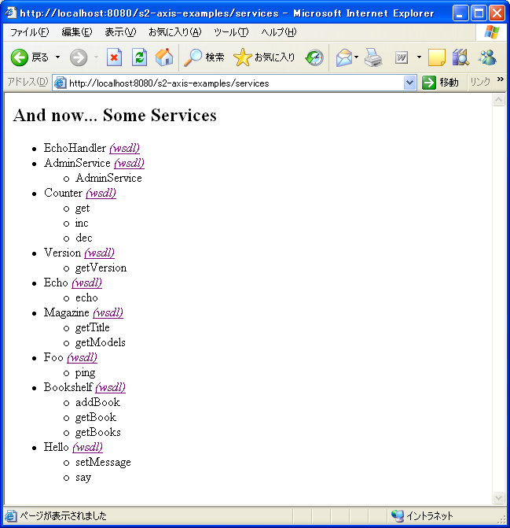

|
 |
|||||
|
本ドキュメントは 目次概要S2Axisを使うと，diconに記述したコンポーネントを簡単にWebサービスとして公開したり，Webサービスをコンポーネントとして簡単に利用することが出来るようになります． Axisを単独で使う場合，Webサービスを実装したクラスのインスタンス管理は通常Axisが行います．ちょっとしたプロトタイプ程度ならそれでも十分ですが，ある程度大きな業務アプリケーションをWebサービスとして提供する場合には，S2が提供するDI (Dependency Injection) や宣言的トランザクションなどのAOP (Aspect Oriented Programming) 機能使えると便利です． S2Axisを使うことで，S2が提供するDIやAOPをフルに活用したコンポーネントをAxisにデプロイし，Webサービスとして公開することが可能になります． セットアップ前提条件S2AxisはS2，S2Remoting，Axisに依存します．対応するバージョンは以下の通りです．
上記のバージョンの組み合わせを全て動作確認しているわけではありません．動作確認しているバージョンの組み合わせについては以下に記述してあります． 実行環境S2Axisを実行するには，以下のものが必要です．
開発環境S2Axisのディストリビューションは，他のS2関連プロダクトの多くと同様，Eclipse Javaプロジェクトをアーカイブしたものとなっています．
S2AxisExamplesのディストリビューションは，Sysdeo Tomcatプラグインを使用したEclipse Tomcatプロジェクトをアーカイブしたものとなっています．
ダウンロードS2AxisおよびS2AxisExamplesはこちらからダウンロードすることが出来ます． インストールS2Axis
S2AxisExamples
サンプルの確認インストールの確認のために，サンプルを実行してください．
http://localhost:8080/s2-axis-examples/services
 エラーが表示された場合には，Webコンテナの設定に問題があるかもしれません．エラーメッセージの内容を確認してください． 基本的な使い方Webアプリケーションの設定S2Axisを使用するには，AxisおよびS2を 以下はS2AxisExamplesに含まれている <?xml version="1.0" encoding="ISO-8859-1"?>
<!DOCTYPE web-app
PUBLIC "-//Sun Microsystems, Inc.//DTD Web Application 2.3//EN"
"http://java.sun.com/dtd/web-app_2_3.dtd"
>
<web-app>
<display-name>S2AxisExamples</display-name>
<filter>
<filter-name>s2filter</filter-name>
<filter-class>org.seasar.framework.container.filter.S2ContainerFilter</filter-class>
</filter>
<filter-mapping>
<filter-name>s2filter</filter-name>
<url-pattern>/*</url-pattern>
</filter-mapping>
<listener>
<listener-class>org.apache.axis.transport.http.AxisHTTPSessionListener</listener-class>
</listener>
<servlet>
<servlet-name>AxisServlet</servlet-name>
<display-name>Apache-Axis Servlet</display-name>
<servlet-class>org.apache.axis.transport.http.AxisServlet</servlet-class>
<load-on-startup>10</load-on-startup>
</servlet>
<servlet>
<servlet-name>AdminServlet</servlet-name>
<display-name>Axis Admin Servlet</display-name>
<servlet-class>
org.apache.axis.transport.http.AdminServlet
</servlet-class>
<load-on-startup>10</load-on-startup>
</servlet>
<servlet>
<servlet-name>SOAPMonitorService</servlet-name>
<display-name>SOAPMonitorService</display-name>
<servlet-class>
org.apache.axis.monitor.SOAPMonitorService
</servlet-class>
<init-param>
<param-name>SOAPMonitorPort</param-name>
<param-value>5001</param-value>
</init-param>
<load-on-startup>10</load-on-startup>
</servlet>
<servlet>
<servlet-name>s2servlet</servlet-name>
<display-name>s2servlet</display-name>
<servlet-class>org.seasar.framework.container.servlet.S2ContainerServlet</servlet-class>
<init-param>
<param-name>configPath</param-name>
<param-value>app.dicon</param-value>
</init-param>
<init-param>
<param-name>debug</param-name>
<param-value>false</param-value>
</init-param>
<load-on-startup>20</load-on-startup>
</servlet>
<servlet-mapping>
<servlet-name>AxisServlet</servlet-name>
<url-pattern>/servlet/AxisServlet</url-pattern>
</servlet-mapping>
<servlet-mapping>
<servlet-name>AxisServlet</servlet-name>
<url-pattern>/services/*</url-pattern>
</servlet-mapping>
<servlet-mapping>
<servlet-name>SOAPMonitorService</servlet-name>
<url-pattern>/SOAPMonitor</url-pattern>
</servlet-mapping>
<!-- uncomment this if you want the admin servlet -->
<!--
<servlet-mapping>
<servlet-name>AdminServlet</servlet-name>
<url-pattern>/servlet/AdminServlet</url-pattern>
</servlet-mapping>
-->
<servlet-mapping>
<servlet-name>s2servlet</servlet-name>
<url-pattern>/s2servlet</url-pattern>
</servlet-mapping>
<session-config>
<!-- Default to 5 minute session timeouts -->
<session-timeout>5</session-timeout>
</session-config>
<!-- currently the W3C havent settled on a media type for WSDL;
http://www.w3.org/TR/2003/WD-wsdl12-20030303/#ietf-draft
for now we go with the basic 'it's XML' response -->
<mime-mapping>
<extension>wsdl</extension>
<mime-type>text/xml</mime-type>
</mime-mapping>
<mime-mapping>
<extension>xsd</extension>
<mime-type>text/xml</mime-type>
</mime-mapping>
<welcome-file-list id="WelcomeFileList">
<welcome-file>index.html</welcome-file>
</welcome-file-list>
</web-app>
サーバ側の設定
|
| プロパティ | 説明 |
|---|---|
serviceType |
公開するサービスの型を指定します．特定のインタフェース型を指定することで，不要なメソッドが公開されることを防ぐことが出来ます． |
allowMethods |
公開するメソッドの名前を指定します．複数のメソッドを指定する場合は空白で区切ります． |
provider |
サービスプロバイダの種類を指定します．現在サポートされているのはRPCとMsgだけです．省略するとRPCになります． |
詳細はクイックリファレンスの「org.seasar.remoting.axis.ServiceDef」を参照してください．
タイプマッピング定義
Axisを使う場合，アプリケーション独自のJavaBeansなど，JAX-RPCで定められていない型をサービスの引数や戻り値として使う場合にはSerializer / Deserializerを指定する必要があります．S2Axisでは，Axisが提供するタイプマッピングの自動登録を有効に設定するので，特別なSerializer / Deserializerが必要な場合を除いて明示的に登録する必要はありません．
特別なSerializer / Deserializerを使う場合や，Java型のパッケージとXML型の名前空間の対応を指定したい場合には，タイプマッピングを登録します．
ServiceDefにはタイプマッピングを複数登録することが出来ます．
<component name="Hello" class="org.seasar.remoting.axis.examples.ex02.HelloImpl">
<meta name="axis-service">
<component class="org.seasar.remoting.axis.server.ServiceDef">
<initMethod name="addTypeMapping">
<arg>
<component type="org.seasar.remoting.axis.server.TypeMappingDef">
<property name="...">・・・</property>
</component>
</arg>
</initMethod>
</component>
</meta>
<property name="...">・・・</property>
</component>
org.seasar.remoting.axis.server.TypeMappingDefには次のプロパティがあります．
| プロパティ | 説明 |
|---|---|
type |
Java型のクラスを指定します．このプロパティは必須です． |
namespaceURI |
XML型の名前空間URIを指定します．省略するとJava型の型のパッケージから導出されます． |
namespacePrefix |
XML型の名前空間接頭辞を指定します．省略するとデフォルト名前空間になります． |
localPart |
XML型のローカル名を指定します．省略するとJava型のクラス名が使われます． |
serializer |
シリアライザファクトリを指定します．省略するとAxisのBeanSerialzierFactoryが使われます． |
deserializer |
デシリアライザファクトリを指定します．省略するとAxisのBeanDeserialzierFactoryが使われます． |
encodingStyle |
エンコーディングスタイルを指定します．省略するとencodedが使われます． |
詳細はクイックリファレンスの「org.seasar.remoting.axis.TypeMappingDef」を参照してください．
WSDDによるサービスのデプロイ
WebサービスのWSDLがあり，AxisのWSDL2Javaを使用してJavaの実装クラスを作成した場合には，WSDL2Javaが生成したdeploy.wsddを指定してサービスをデプロイすることが出来ます．
<component name="Magazine" class="org.seasar.remoting.axis.examples.ex05.MagazineSoapBindingImpl">
<meta name="axis-service">"org/seasar/remoting/axis/examples/ex05/deploy.wsdd"</meta>
・・・
</component>
この場合，WSDL2Javaを実行する際に指定されたJava型とXML型とのタイプマッピングがdeploy.wsddに含まれているので，必要なタイプマッピングが全てデプロイされます．
WSDDはサービス定義 (<service>要素) を一つだけ含むことができます．複数のサービス定義を含んでいる場合はデプロイに失敗します．
クライアント側の設定
S2Axisを使うことで，Webサービスをコンポーネントとして使用することが出来ます．
動的呼び出し
Javaインタフェースを使用してサービスを呼び出すには，diconファイルを次のように記述します．
<!-- Webサービスのプロキシ -->
<component name="Echo" class="org.seasar.remoting.axis.examples.ex01.Echo">
<aspect>remoting</aspect>
</component>
<!-- リモート呼び出しのインターセプタ -->
<component name="remoting" class="org.seasar.remoting.common.interceptor.RemotingInterceptor"/>
<!-- Axisコネクタ -->
<component name="connector" class="org.seasar.remoting.axis.connector.AxisConnector">
<property name="baseURL">
"http://localhost:8080/s2-axis-examples/services/"
</property>
</component>
<!-- Axisサービス -->
<component class="org.apache.axis.client.Service" autoBinding="none"/>
呼び出すWebサービスごとにプロキシが必要です．プロキシの<component>要素のclass属性にはWebサービスのJavaインタフェースを指定します．このコンポーネントにはRemotingInterceptorをアスペクトとして指定します．プロキシはWebサービスのインタフェースごとに一つの<component>定義が必要です．
RemotingInterceptorはプロキシのメソッド呼び出しを横取りし，Axisコネクタを呼び出します．上の例では，S2の自動バインディングによりRemotingInterceptorのプロパティにAxisコネクタが設定されています．RemotingInterceptorは，Axisコネクタごとに一つの<component>定義が必要です．
AxisコネクタはAxisサービスを通じてWebサービスを呼び出します．上の例では，S2の自動バインディングによりAxisコネクタのプロパティにAxisサービスが設定されています．baseURLプロパティには，WebサービスのエンドポイントのベースURLを指定します．このベースURLにプロキシの<component>要素のname属性で指定された名前を付加したURLが実際の通信で使用されます．AxisコネクタはWebサービスのエンドポイントごとに一つの<component>定義が必要です．
AxisサービスはSOAP等のプロトコルを使用して実際にWebサービスと通信します．Axisサービスは少なくともS2コンテナごとに一つの<component>定義が必要です．
静的呼び出し
WSDLから生成されたスタブを使用してサービスを呼び出すには，diconファイルを次のように記述します．
<component class="org.seasar.axis.examples.ex05.Magazine">
locator.getMagazine()
</component>
<component name="locator" class="org.seasar.axis.examples.ex05.MagazineServiceLocator"/>
サービスロケータはWSDL2Javaにより生成されるクラスです．このクラスのメソッドgetXxx()によりサービスのJavaインタフェースを実装したスタブを取得することが出来ます．
クライアント／サーバ共通の設定
s2-axis.diconファイルのインクルード
以下の機能を使用する場合は，サーバ側だけでなくクライアント側でも，app.diconファイルの中でs2-axis.diconファイルをインクルードします．
<components>
<include path="s2-axis.dicon"/>
・・・
</components>
s2-axis.diconはs2-axis-1.0.0.jarの中に含まれているため，ロケーションを気にする必要はありません．
ハンドラのデプロイ
サービスだけでなく，ハンドラもS2でインスタンス管理することが出来ます．
<component name="fooRequestHandler" class="org.seasar.remoting.axis.examples.ex06.LoggingHandler">
<meta name="axis-handler"/>
・・・
</component>
<component>要素のname属性は必須です．ハンドラチェーンの定義などでは，この名前を指定してハンドラを参照することが出来ます．
WSDDのデプロイ
任意のWSDDファイルをS2Axisでデプロイすることが出来ます．
<components>
<meta name="axis-deploy">"org/seasar/remoting/axis/examples/ex07/deploy.wsdd"</meta>
</components>
これは，AxisのAdminClientによるデプロイと同等ですが，S2の初期化時に自動的にデプロイされます．
Axisエンジンの指定
サービスやハンドラ，WSDDファイルをデプロイする対象となるAxisエンジンをdiconファイルごとに指定することが出来ます．
<components>
<meta name="axis-engine">"default-client"</meta>
</components>
<meta>要素の内容に指定した文字列よりAxisエンジンが決定されます．
詳細はクイックリファレンスの「service-engineに指定できる内容」を参照してください．
サンプル
S2Axis-Examplesは，S2Axisの基本的な機能を一通り使用したサンプルです．ソースはサーバ側とクライアント側に分かれており，クライアント側はJUnit (S2Unit) のテストケースとして作成されています．それぞれ，以下のソースフォルダにあります．
- サーバ側
src/serverフォルダのorg.seasar.axis.examples.exnnパッケージ- クライアント側
src/clientフォルダのorg.seasar.axis.examples.exnnパッケージ
ex01 コンポーネントをWebサービスとして公開する
単純なクラスをWebサービスとして公開する例です．
<?xml version="1.0" encoding="UTF-8"?>
<!DOCTYPE components PUBLIC "-//SEASAR2.1//DTD S2Container//EN"
"http://www.seasar.org/dtd/components21.dtd">
<components>
<component name="Echo" class="org.seasar.remoting.axis.examples.ex01.EchoImpl">
<meta name="axis-service"/>
</component>
</components>
クライアント側は動的呼び出しを使用しています．
<?xml version="1.0" encoding="UTF-8"?>
<!DOCTYPE components PUBLIC "-//SEASAR2.1//DTD S2Container//EN"
"http://www.seasar.org/dtd/components21.dtd">
<components>
<component name="remoting" class="org.seasar.remoting.common.interceptor.RemotingInterceptor"/>
<component class="org.apache.axis.client.Service"/>
<component name="connector" class="org.seasar.remoting.axis.connector.AxisConnector">
<property name="baseURL">
"http://localhost:8080/s2-axis-examples/services/"
</property>
</component>
<component class="org.seasar.remoting.axis.examples.ex01.Echo">
<aspect>remoting</aspect>
</component>
</components>
ex02 特定のインタフェースを公開する
実装クラスを公開すると，不要なメソッドまで公開されてる場合があります(インタフェースを実装していない場合や複数のインタフェースを実装している場合など)．ex02の実装クラスHelloImplは二つのインタフェースを実装していますが，MessageSettableのメソッドsetMessage(String)はWebサービスとして公開しないものとします．
このような場合には，公開するJavaインタフェースを指定します(実装したインタフェースが一つだけの場合や，実装した複数のインタフェースのメソッドを全て公開する場合には明示的に指定する必要はありません)．
<?xml version="1.0" encoding="UTF-8"?>
<!DOCTYPE components PUBLIC "-//SEASAR2.1//DTD S2Container//EN"
"http://www.seasar.org/dtd/components21.dtd">
<components>
<component name="Hello" class="org.seasar.remoting.axis.examples.ex02.HelloImpl">
<meta name="axis-service">
<component class="org.seasar.remoting.axis.server.ServiceDef">
<property name="serviceType">
@org.seasar.remoting.axis.examples.ex02.Hello@class
</property>
</component>
</meta>
<property name="message">"Hello"</property>
</component>
</components>
<property>要素をコメントアウトしてWebコンテナを起動すると，HelloのWSDLにsetServiceType(String)メソッドが含まれることを確認することが出来ます．
ex03 自動タイプマッピングを使用する
このサンプルでは，サービスは引数および戻り値の型としてJavaBeansを使用しています．しかし，クライアント・サーバ側とも自動的にタイプマッピングが登録されるため，特に何も指定しなくても動作します．
ex04 セッションスコープを使用する
Axisは独自の拡張機能としてHTTPセッションを使用したセッションスコープのサービスをサポートします．S2Axisでセッションスコープのサービスを使う場合には，サービスのライフサイクル管理はS2で行います．
<?xml version="1.0" encoding="UTF-8"?>
<!DOCTYPE components PUBLIC "-//SEASAR2.1//DTD S2Container//EN"
"http://www.seasar.org/dtd/components21.dtd">
<components>
<component name="Counter" class="org.seasar.axis.examples.ex04.CounterImpl"
instance="session"
>
<meta name="axis-service"/>
</component>
</components>
instance属性の値を singletonやprototypeに変更すると，このサンプルは正しく動作しなくなります (テストケースであるクライアントが失敗します)．
セッションスコープを使う場合，クライアント側ではセッショントラッキングを有効にする必要があります．
<?xml version="1.0" encoding="UTF-8"?>
<!DOCTYPE components PUBLIC "-//SEASAR2.1//DTD S2Container//EN"
"http://www.seasar.org/dtd/components21.dtd">
<components>
<component name="remoting" class="org.seasar.remoting.common.interceptor.RemotingInterceptor"/>
<component class="org.apache.axis.client.Service">
<property name="maintainSession">true</property>
</component>
<component name="connector" class="org.seasar.remoting.axis.connector.AxisConnector">
<property name="baseURL">
"http://localhost:8080/s2-axis-examples/services/"
</property>
</component>
<component class="org.seasar.remoting.axis.examples.ex04.Counter">
<aspect>remoting</aspect>
</component>
</components>
maintainSession属性の値を falseにすると，このサンプルは正しく動作しなくなります．
ex05 WSDLを使用する
WSDL2Javaを使ってJavaのスタブおよびスケルトンを生成した場合のサンプルです．WSDL2Javaが生成したWSDDファイルを指定します．
<?xml version="1.0" encoding="UTF-8"?>
<!DOCTYPE components PUBLIC "-//SEASAR2.1//DTD S2Container//EN"
"http://www.seasar.org/dtd/components21.dtd">
<components>
<component name="Magazine"
class="org.seasar.remoting.axis.examples.ex05.MagazineSoapBindingImpl">
<meta name="axis-service">
"org/seasar/remoting/axis/examples/ex05/deploy.wsdd"
</meta>
<property name="title">"CanCam"</property>
<initMethod name="addModel">
<arg>
<component class="org.seasar.remoting.axis.examples.ex05.Model">
<property name="name">"Yuri Ebihara"</property>
<property name="age">25</property>
</component>
</arg>
</initMethod>
<initMethod name="addModel">
<arg>
<component class="org.seasar.remoting.axis.examples.ex05.Model">
<property name="name">"Naoko Tokuzawa"</property>
<property name="age">20</property>
</component>
</arg>
</initMethod>
<initMethod name="addModel">
<arg>
<component class="org.seasar.remoting.axis.examples.ex05.Model">
<property name="name">"Asami Usuda"</property>
<property name="age">20</property>
</component>
</arg>
</initMethod>
</component>
</components>
クライアント側はWSDLから生成されたスタブを使用する静的呼び出しになっています．
<?xml version="1.0" encoding="UTF-8"?>
<!DOCTYPE components PUBLIC "-//SEASAR2.1//DTD S2Container//EN"
"http://www.seasar.org/dtd/components21.dtd">
<components>
<component name="locator"
class="org.seasar.remoting.axis.examples.ex05.MagazineServiceLocator"
/>
<component class="org.seasar.remoting.axis.examples.ex05.Magazine">
<!-- locator.getMagazine() -->
locator.getMagazine(
new java.net.URL(locator.getMagazineAddress() +
locator.getMagazineWSDDServiceName()))
</component>
</components>
ex06 ハンドラのインスタンス管理をS2で行う
S2でインスタンス管理するハンドラをサービスのリクエストチェーンおよびレスポンスチェーンとして使用するサンプルです．
<?xml version="1.0" encoding="UTF-8"?>
<!DOCTYPE components PUBLIC "-//SEASAR2.1//DTD S2Container//EN"
"http://www.seasar.org/dtd/components21.dtd">
<components>
<component name="Foo"
class="org.seasar.remoting.axis.examples.ex06.FooSoapBindingImpl">
<meta name="axis-service">
"org/seasar/remoting/axis/examples/ex06/deploy.wsdd"
</meta>
</component>
<component name="fooRequestHandler"
class="org.seasar.remoting.axis.examples.ex06.LoggingHandler">
<meta name="axis-handler"/>
<property name="message">"Enter Foo"</property>
</component>
<component name="fooResponseHandler"
class="org.seasar.remoting.axis.examples.ex06.LoggingHandler">
<meta name="axis-handler"/>
<property name="message">"Exit Foo"</property>
</component>
</components>
このハンドラを使用するため，WSDL2Javaが生成したWSDDにリクエストフローおよびレスポンスフローの記述を追加しています．
<!-- Use this file to deploy some handlers/chains and services -->
<!-- Two ways to do this: -->
<!-- java org.apache.axis.client.AdminClient deploy.wsdd -->
<!-- after the axis server is running -->
<!-- or -->
<!-- java org.apache.axis.utils.Admin client|server deploy.wsdd -->
<!-- from the same directory that the Axis engine runs -->
<deployment
xmlns="http://xml.apache.org/axis/wsdd/"
xmlns:java="http://xml.apache.org/axis/wsdd/providers/java">
<!-- Services from FooService WSDL service -->
<service name="Foo" provider="java:RPC" style="rpc" use="encoded">
<parameter name="wsdlTargetNamespace" value="http://ex06.examples.axis.remoting.seasar.org"/>
<parameter name="wsdlServiceElement" value="FooService"/>
<parameter name="wsdlServicePort" value="Foo"/>
<parameter name="className" value="org.seasar.remoting.axis.examples.ex06.FooSoapBindingImpl"/>
<parameter name="wsdlPortType" value="Foo"/>
<operation name="ping" qname="operNS:ping"
xmlns:operNS="http://ex06.examples.axis.remoting.seasar.org" soapAction=""
>
</operation>
<parameter name="allowedMethods" value="ping"/>
<requestFlow>
<handler type="fooRequestHandler"/>
</requestFlow>
<responseFlow>
<handler type="fooResponseHandler"/>
</responseFlow>
</service>
</deployment>
クライアントを実行するとサーバ側に次のようなメッセージが出力されます．
[DEBUG] http-8080-Processor24 org.seasar.remoting.axis.examples.ex06.LoggingHandler
Enter Foo
[DEBUG] http-8080-Processor24 org.seasar.remoting.axis.examples.ex06.LoggingHandler
Exit Foo
ex07 WSDDをS2Axisでデプロイする
このサンプルでは，Axisが標準で提供するEchoHandlerをプロバイダとするサービスをWSDDに記述し，デプロイします．
<?xml version="1.0" encoding="UTF-8"?>
<!DOCTYPE components PUBLIC "-//SEASAR2.1//DTD S2Container//EN"
"http://www.seasar.org/dtd/components21.dtd">
<components>
<meta name="axis-deploy
">"org/seasar/remoting/axis/examples/ex07/deploy.wsdd"
</meta>
</components>
ex05との違いは，<component>要素ではなく，<components>要素の下に記述することです．
デプロイされるWSDDは次のようになっています．
<deployment
xmlns="http://xml.apache.org/axis/wsdd/"
xmlns:java="http://xml.apache.org/axis/wsdd/providers/java">
<service name="EchoHandler" provider="Handler" style="rpc" use="encoded">
<parameter name="handlerClass" value="org.apache.axis.handlers.EchoHandler"/>
</service>
</deployment>
WSDDに記述されているEchoHandlerのインスタンス管理にS2およびS2Axisは関与しません．単にデプロイするだけです．
ex08 クライアントにハンドラとWSDDをデプロイする
このサンプルでは，diconファイルに記述したハンドラおよび，WSDDファイルをデプロイします．
<?xml version="1.0" encoding="UTF-8"?>
<!DOCTYPE components PUBLIC "-//SEASAR2.1//DTD S2Container//EN"
"http://www.seasar.org/dtd/components21.dtd">
<components>
<include path="s2-axis.dicon"/>
<component name="remoting" class="org.seasar.remoting.common.interceptor.RemotingInterceptor"/>
<component class="org.apache.axis.client.Service"/>
<component name="connector" class="org.seasar.remoting.axis.connector.AxisConnector">
<property name="baseURL">
"http://localhost:8080/s2-axis-examples/services/"
</property>
</component>
<component class="org.seasar.remoting.axis.examples.ex01.Echo">
<aspect>remoting</aspect>
</component>
<component name="countHandler"
class="org.seasar.remoting.axis.examples.ex08.CountHandler">
<meta name="axis-handler"/>
</component>
<meta name="axis-deploy">"org/seasar/remoting/axis/examples/ex08/deploy.wsdd"</meta>
</components>
デプロイされるWSDDは次のようになっています．
<deployment
xmlns="http://xml.apache.org/axis/wsdd/"
xmlns:java="http://xml.apache.org/axis/wsdd/providers/java">
<globalConfiguration>
<requestFlow>
<handler type="countHandler"/>
</requestFlow>
<responseFlow>
<handler type="countHandler"/>
</responseFlow>
</globalConfiguration>
</deployment>
WSDDに記述されているcountHandlerのインスタンス管理はS2によって行われます．
クイックリファレンス
diconファイル
s2-axis.dicon
S2Axisが提供するdiconファイルです．s2-axis-1.0.0.jarファイルの中に含まれているので，ロケーションを気にすることなくincludeすることができます．
サーバが側では必須となります．
クライアント側では，ハンドラやWSDDのデプロイをする場合にのみ必要となります．
<meta>要素
<components>要素の下
| 名前 | C | S | 内容 | 説明 |
|---|---|---|---|---|
axis-deploy |
○ | ○ | 文字列 | 内容で指定された文字列をパス名とするWSDDファイルをAxisにデプロイします．WSDDファイルのパス名はクラスパスからの相対パスで指定します． WSDDファイルの中で指定されたサービスやハンドラのインスタンス管理はAxisによって行われます．S2およびS2Axisは関与しません． WSDDファイルの中では，S2Axisによってデプロイされたサービスやハンドラを参照することができます． |
axis-engine |
○ | ○ | 文字列 | サービスやハンドラ，WSDDをデプロイする対象となるAxisエンジンの取得方法を指定しますします． 詳細は「Axisエンジンの取得方法」を参照してください． |
<component>要素の下
| プロパティ | C | S | 内容 | 説明 |
|---|---|---|---|---|
axis-handler |
○ | ○ | 空 | 親要素で記述されたコンポーネントをハンドラとしてAxisにデプロイします． |
axis-service |
× | ○ | 空 | 親要素で記述されたコンポーネントをサービスとしてAxisにデプロイします． コンポーネントがメソッドの定義されたインタフェースを実装している場合は，そのメソッドが公開されます．インタフェースを実装していなければ， java.lang.Object型で定義されているものを除いたpublicメソッドが公開されます． |
ServiceDef型のコンポーネント |
親要素で記述されたコンポーネントをサービスとしてAxisにデプロイします． 詳細は ServiceDefの説明を参照してください． |
|||
| 文字列 | 親要素で記述されたコンポーネントをサービスとしてAxisにデプロイします． サービスの詳細は，内容で指定された文字列をパス名とするWSDDファイルに記述された <service>要素の指定に従います．WSDDファイルのパス名はクラスパスからの相対パスで指定します． |
コンポーネント
org.seasar.remoting.axis.ServiceDef
サーバ側で使用するコンポーネントで，<meta>要素の内容に設定されます．
サービスとして公開するコンポーネントの詳細を指定するために使われます．
プロパティ
| プロパティ | 型 | 説明 |
|---|---|---|
serviceType |
String |
公開するサービスの型を指定します．特定のインタフェース型を指定することで，不要なメソッドが公開されることを防ぐことが出来ます． 省略するとコンポーネントの型になります．ただし，コンポーネントがメソッドの定義されたインタフェースを一つだけ実装している場合には，そのインタフェース型になります． |
allowMethods |
boolean |
公開するメソッドの名前を指定します．複数のメソッドを指定する場合は空白で区切ります． 省略すると次のようになります．
|
provider |
String |
サービスプロバイダの種類を指定します． 現在サポートされているのは RPCとMsgだけです．省略するとRPCになります． |
メソッド
| メソッド | 説明 |
|---|---|
addTypeMapping(TypeMapping) |
タイプマッピングを登録します．TypeMappingついては次の項を参照してください． |
org.seasar.remoting.axis.TypeMappingDef
サーバ側で使用するコンポーネントで，ServiceDefコンポーネントに設定されます．
サービスとして公開するコンポーネントで使用するタイプマッピングの詳細を指定するために使われます．
| プロパティ | 型 | 説明 |
|---|---|---|
type |
Class |
Java型のクラスを指定します．このプロパティは必須です． |
namespaceURI |
String |
XML型の名前空間URIを指定します．省略するとJava型の型のパッケージから導出されます． |
namespacePrefix |
String |
XML型の名前空間接頭辞を指定します．省略するとデフォルト名前空間になります． |
localPart |
String |
XML型のローカル名を指定します．省略するとJava型のクラス名が使われます． |
serializer |
Class | シリアライザファクトリを指定します．省略するとAxisのBeanSerialzierFactoryが使われます． |
deserializer |
String |
デシリアライザファクトリを指定します．省略するとAxisのBeanDeserialzierFactoryが使われます． |
encodingStyle |
String |
エンコーディングスタイルを指定します．省略するとencodedが使われます． |
org.seasar.remoting.axis.connector.AxisConnector
クライアント側で使用するコンポーネントで，Web サービスへの動的な接続に使用されます．
プロパティ
| プロパティ | 型 | 説明 |
|---|---|---|
baseURL |
String |
接続するサービスの基礎になるURLを指定します． このURLと，S2RemotinのRemotingInterceptorをアスペクトとして設定されたプロキシコンポーネントの名前 (<component>要素のname属性の値) を連結したURLが，接続するサービスのURLとなります． |
org.seasar.remoting.common.interceptor.RemotingInterceptor
S2Remotingが提供するコンポーネントです．
クライアント側でWebサービスをコンポーネントとして使用する場合に，このコンポーネントをアスペクトとして使用します．
org.apache.axis.client.Service
Axisが提供するコンポーネントです．
クライアント側で動的呼び出しをする場合に必要となります．
その他
公開されるサービスの名前
- WSDDを指定された場合
- WSDDに記述された
<service>要素のname属性の値が使われます
context-path/services/name - diconファイルに名前空間が指定されていない場合
- diconファイルの
<component>要素のname属性の値が使われます．
context-path/services/name - diconファイルに名前空間が指定されている場合
- diconファイルの
<components>要素のnamespace属性の値と<component>要素のname属性の値が使われます．
context-path/services/namespace/name
service-engineに指定できる内容
| 内容 | 意味 |
|---|---|
| (指定なし) | "default"を指定した場合と同じです． |
"default" |
S2コンテナにjavax.servlet.ServletContextが設定されていれば"default-server"，そうでなければ"default-client"を指定した場合と同じです． |
"default-client" |
S2コンテナからjavax.xml.rpc.Serviceを実装したコンポーネント (サービスまたはサービスロケータ) を取得し，そのエンジンを使用します． |
"default-server" |
最初にservlet:AxisServletでエンジンを検索し，見つからなければservlet:AxisEngineでエンジンを検索します． |
"s2:name" |
S2コンテナからnameで取得したコンポーネントをAxisエンジンとして使用します． |
"servlet:name" |
ServletContextからnameで取得した属性をAxisエンジンとして使用します． |
| (その他) | S2コンテナから指定された文字列で取得したコンポーネントをAxisエンジンとして使用します． |